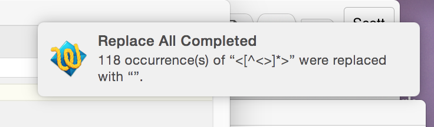
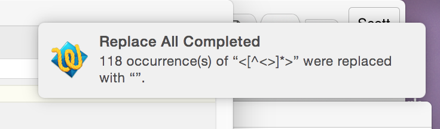

Datasets for Text Mining
Selecting, Scraping, and Cleaning
Selecting Data
- Big data is less valuable than beautiful data.
- Google used big data to recognize cats.
- You'll need crafted data to recognize something more interesting.
Contrastive Sampling
- Think about concrete research questions.
- List the kinds of texts that could help answer them.
- Think about proxy variables for phenomena of interest.
- Select a subset of texts with many similarities.
- Identify precise differences among those texts that relate to your proxy variables.
- Conceive an ideal. Then use available datasets to find a compromise.
Contrasting Reviewed and Unreviewed Poetry

- Research Question: How do the standards governing literary prestige change?
- Kind of Text: Historical works of literature charted across time.
- Proxy Variable: The existence of reviews in prestigious periodicals (easy to measure) implies prestige (hard to measure).
- Similarity: Focus on works in one genre (books of poetry).
- Difference: Divide the set into books of poetry that were reviewed, and books of poetry that were not reviewed.
- Available Data: Assume that books randomly drawn from a large pool of data weren't reviewed.
Workflow
- Three steps:
- Select data using process described before.
- Download data using HTTrack or wget.
- Clean data using Notepad++ or TextWrangler.
Download data using HTTrack
- The quick version (to be expanded):
- Download and install HTTrack: https://www.httrack.com/page/2/en/index.html
- Step through the settings pages by pressing the "Next" button; adjust settings when necessary.
- Start the download process. When it's complete, you'll have a set of HTML files.
Clean data using TextWrangler (Mac Only)
Clean data using TextWrangler (Mac Only)
- Open TextWrangler, and load an HTML file.
- Look for the top-level "Search" menu option. Select "Find".
- Near the bottom of the "Find" window, select "Grep".
Clean data using TextWrangler (Mac Only)
- In the top text field (labeled "Find"), type "<[^<>]*>".
- The expression has four parts. It will find every sequence of characters that
- < -- Begins with a '<'.
- [^<>] -- Continues with characters that are neither '<' or '>'.
- * -- Has zero or more of those characters.
- > -- Ends with a '>'.
Clean data using TextWrangler (Mac Only)
- Leave the bottom text field (labeled "Replace) empty, and click the "Replace All" button.
 

- The rule has found all HTML tags and replaced them!
More to come on using Notepad++ in Windows, including screenshots.
Lindsay Van Tine, Mitch Fraas, and Scott Enderle